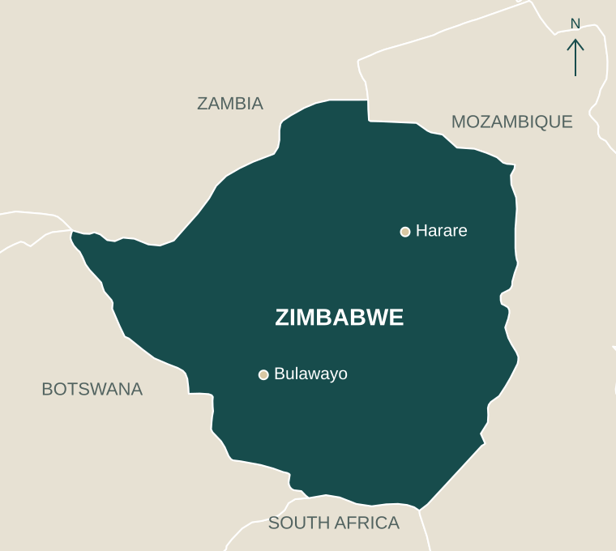
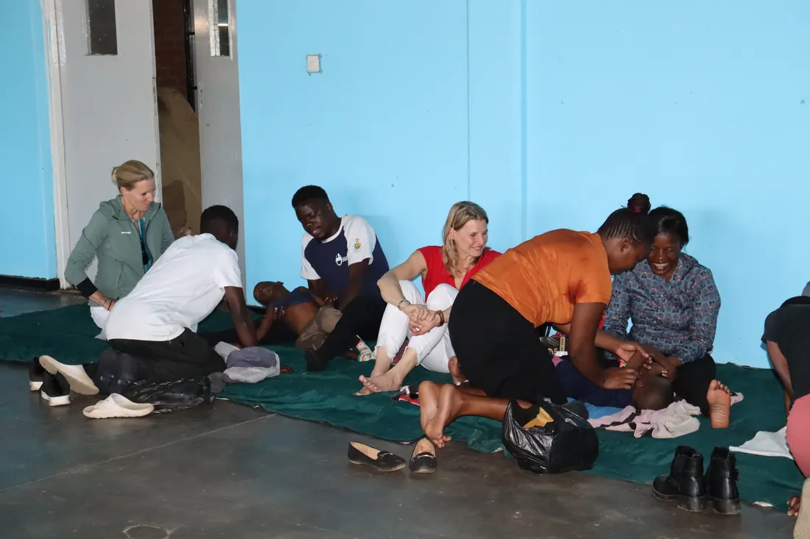
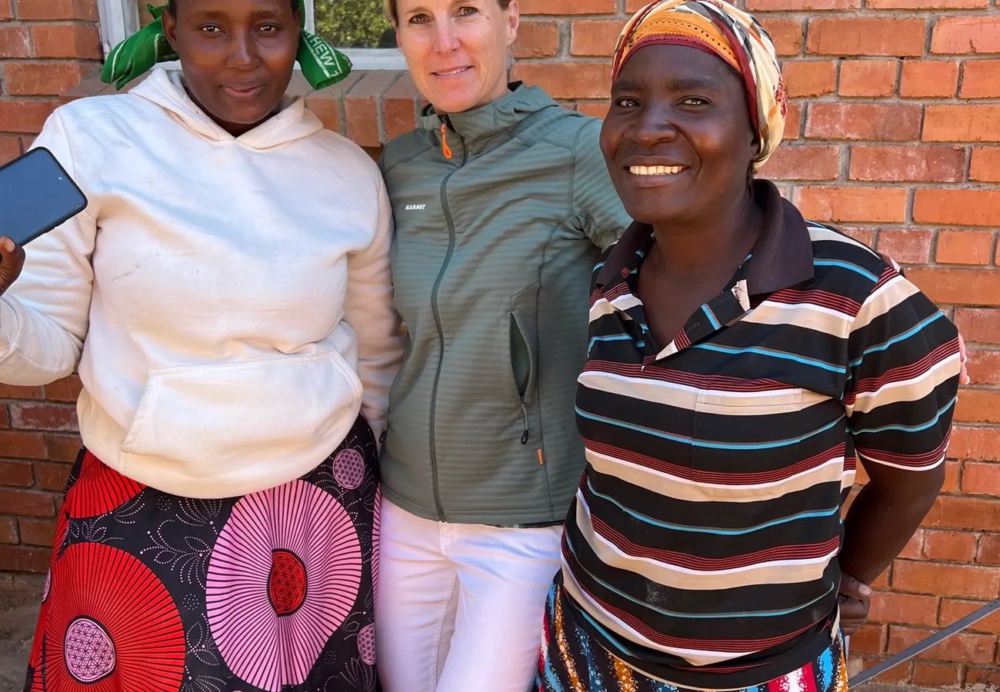
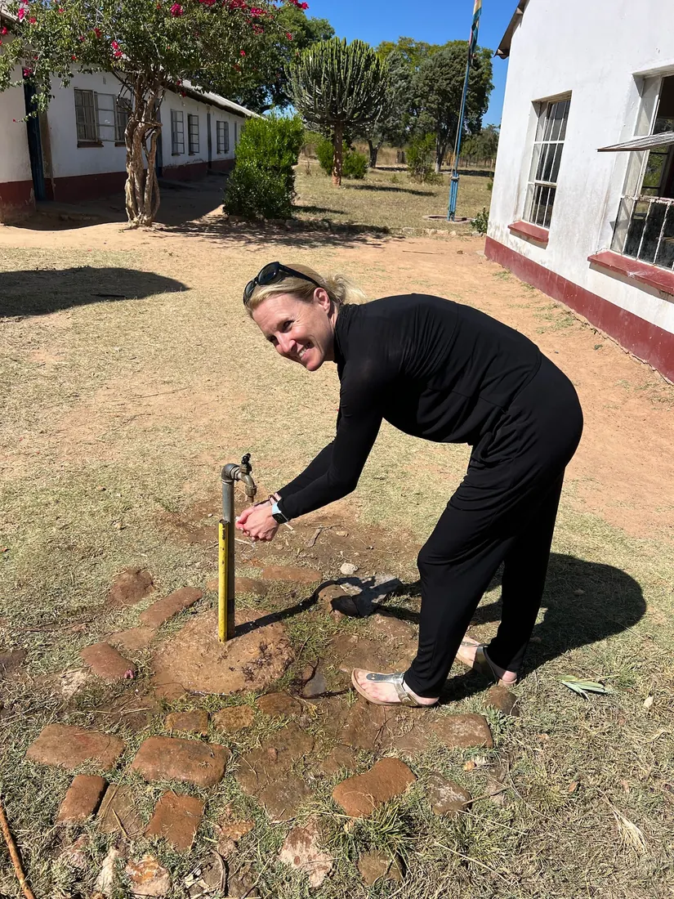
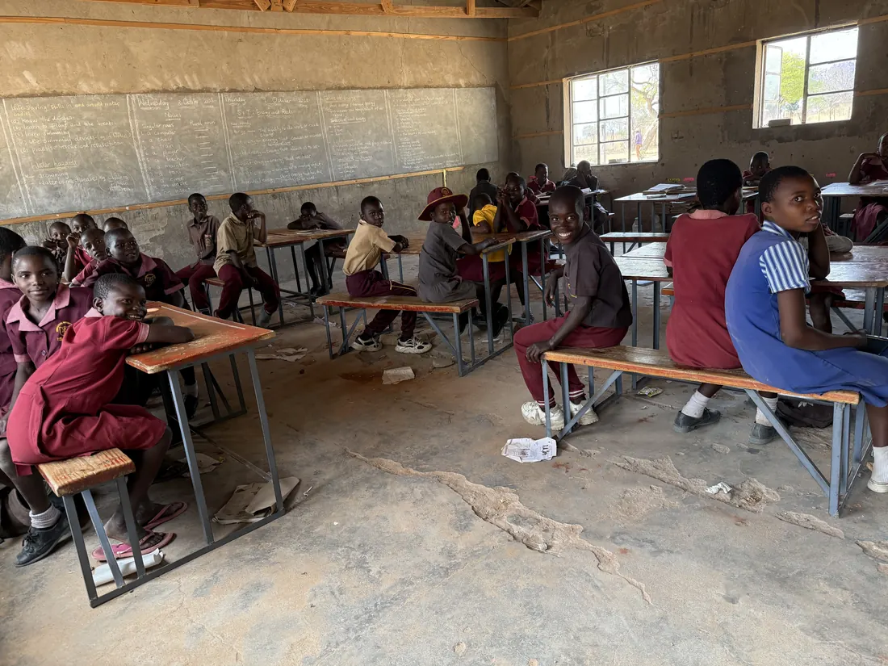
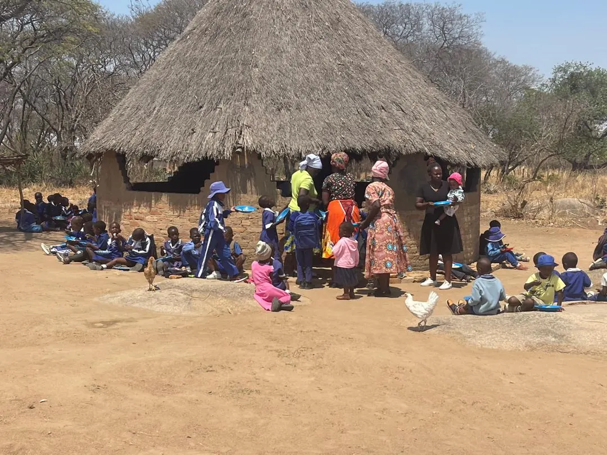
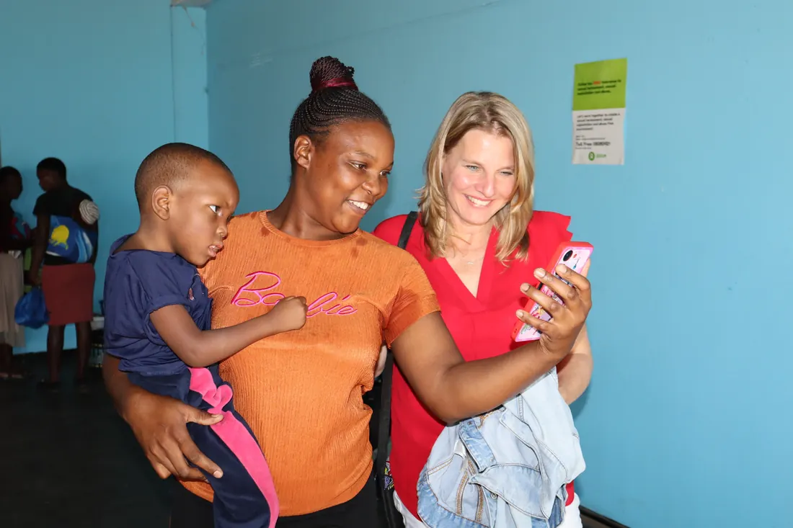
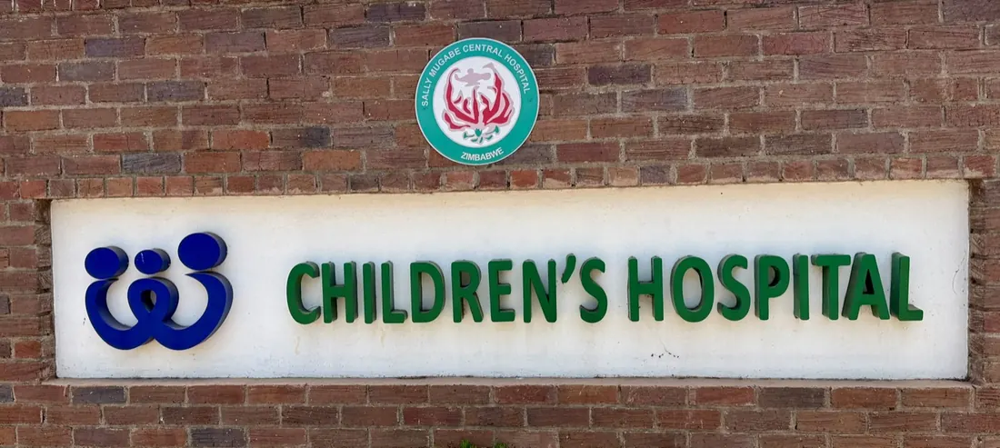

Nutrition is the starting point
Warm meals give children energy and families reassurance. This remains essential.

Projects in Zimbabwe
A daily meal gives children energy. Reliable water enables hygiene, school kitchens and gardens. Together with our partners, we support schools on their journey towards greater self-reliance.
Our approach
We help where specific barriers hold back daily life. At the same time, support should not create lasting dependency. That is why, from day one, we plan every project with local ownership in mind.
Warm meals give children energy and families reassurance. This remains essential.
Without water there can be no hygiene, kitchen or garden, and no realistic step towards self-sufficiency.
Gardens, contributions to school funding and local initiatives can only grow when communities take ownership.
Water & hygiene
At schools without reliable water, every day takes a toll on time, energy and dignity. When water must be carried for kilometres, little capacity is left for cooking, hygiene or gardening. A solar-powered borehole changes this immediately.

The value of water becomes clear in what it makes possible: washing hands, cooking, planting and taking responsibility.
Seen first-hand
The videos tell the same story from two perspectives: before, obtaining water took considerable effort. Afterwards, water provides the infrastructure on which schools and communities can build.

The schools behind our projects
Behind every water project is a school with its own ideas and people who take responsibility. Our project map in Google Earth shows the recorded school locations and their surroundings.
Kawara, Nyamweda and Makuvatsine.
Chikowore, St Marks Chipashu, Nyamashesha, Nehanda and Murambwa.
Masiyarwa is one of them. Together with Kapnek, we support daily school meals.
This map loads without connecting to Google. Only following the link opens Google Earth in a new tab.

School meals & education
Together with Kapnek, we support nutrition at 152 schools. The December 2025 overview records 11,460 preschool children. Masiyarwa Primary School in Zvimba is also part of the programme.
A daily meal gives children energy to learn and play. Early learning and health checks complement the school meals programme. Water and gardens also open up opportunities for schools to provide more for themselves.
Health & rehabilitation
Through local partners, we support children with disabilities and families who are often left to cope alone. Therapy, care and food packages are not secondary concerns. They express the same principle: dignity, not pity.



Local partners
The Herz HD Foundation has worked with the J.F. Kapnek Foundation for many years. Kapnek knows local schools, families and structures, and helps guide projects so that they reflect the realities of community life.
This is why trust is essential to every project: boreholes, school meals, therapy and new ways of generating income all need people who take responsibility locally.
Learning together
School gardens and poultry farming can supplement a school's food supply. To make them sustainable, goals, responsibilities and the use of any income must be agreed together with the community.
We support these steps, listen to local experience and work together to adjust what is not yet working. The goal remains for communities to take a growing role in sustaining nutrition, school life and infrastructure.
Project overview
Water, nutrition and health belong together. Explore the schools in our water programme by year and learn about our other areas of work.

Chishoshe shows how water becomes more than infrastructure. Its school garden demonstrates how a borehole can lead to food production, planning and local responsibility.

In 2025, we supported Kawara, Nyamweda and Makuvatsine. Water provides the foundation for school kitchens, hygiene and further ideas from the communities.

The water programme expands to five more schools in 2026. Each school brings its own circumstances and opportunities.

Masiyarwa is one of 152 schools receiving food support. The Early Childhood Development programme combines meals, early learning and health checks.

Children with cerebral palsy and other disabilities gain access to therapy, care and support for their families.

Impilo is a pilot project for digital medical records. It aims to make medical information more readily available and support the work of healthcare professionals.
Transparency
Many organisations offer help. Our focus is on direct impact, first-hand oversight and partnerships of equals.
Travel, office and administration costs are covered privately. Donations go to the projects.
Project visits are part of the work, not a publicity exercise. They allow us to see both the impact and the challenges first-hand.
Solutions do not simply come from Germany. Through Kapnek, they are developed and sustained with people locally.
Make the next step possible
Every donation helps directly: with school meals, water technology, therapy or a school's next step towards self-reliance.